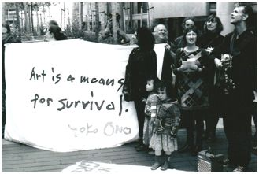
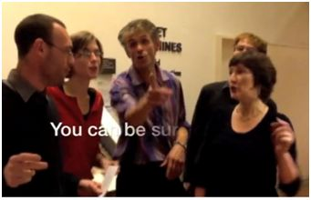
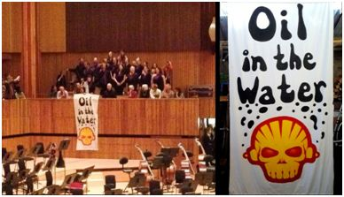

We represent a cross-section of people - artists, cultural event and gallery-goers, environmentalists, human rights activists and others - who believe that oil company logos represent a stain on our cultural institutions.
Oil companies cultivate arts and culture sponsorship relationships to help create a ‘social licence to operate’. This contributes to the veneer of legitimacy that enables them to keep expanding operations at a time of climate crisis and to stifle the demands for justice of those communities who live on the frontline of their destructive, polluting operations. Read more.
350.org is a global organisation helping build a grassroots climate movement that can hold our leaders accountable to science and justice.
350 uses online campaigns, grassroots organising, and mass public actions to oppose new coal, oil and gas projects, take money out of the companies that are heating up the planet, and build 100% clean energy solutions that work for all. 350's network extends to 188 countries.
Having started with one-off days of action, today 350 works on grassroots campaigns across the globe: from opposing coal plants and mega-pipelines, to building renewable energy solutions and cutting financial ties of the fossil fuel industry. All of our work leverages people power to dismantle the influence and infrastructure of the fossil fuel industry.
Some of our proudest moments of recent years include campaigns against Keystone XL and Dakota Access in the United States, stopping fracking in hundreds of cities and states in Brasil, joining historic grassroots mobilizations before and after the Paris Climate Agreement was signed, and pushing hundreds of universities, foundations, cities and churches to divest from fossil fuels.
Our main focus in the UK is the rapidly growing fossil fuel divestment campaign - the sister movement to cultural sponsorship as we work to stigmatise the fossil fuel industry and break its political stranglehold.
At a time when the world should fear much more the heat of the sun and the furious winter’s rages, BP is conspiring to distract us from the naked truth of climate change and with its daring folly burn the world.
BP or not BP? is a theatrical protest group that creatively takes back the cultural spaces that BP has appropriated, and through performance uses them to expose the unethical nature of oil sponsorship. We were formed in response to BP’s sponsorship of the World Shakespeare Festival and the Royal Shakespeare Company in 2012.
BP's logo has not appeared on any plays since, though the Royal Shakespeare Company still retains it as a sponsor. We are now working behind-the-scenes with theatre professionals to promote the idea of fossil free culture across the sector.
In 2014 we turned our main actorvist attentions to the BP-sullied British Museum, where we have
performed over 15 times, and counting... We have invaded with a flash-horde of oily vikings, brought Holmes and Watson in to catch the world's biggest corporate criminal, twice recreated the Deepwater Horizon spill (the second time with Reverend Billy), performed with Colombian trade unionist Gilberto Torres who is suing BP for its role in his kidnap and torture, and joined forces with London Mexico Solidarity to invade the BP-sponsored Day of the Dead festival with ghoulish BP execs.
In 2016, we set up a rebel exhibition in the museum, featuring objects donated by communities affected by BP around the world.
We have also performed, without permission, at the BP-sponsored Edinburgh International Festival - which then dropped BP as a sponsor in 2016! We've created performances at the Royal Opera House and Science Museum, as well as targeting Shell with a Dr Faustus-themed musical at the National Gallery, in solidarity with PCS Union staff striking over privatisation.
Times are tough. Ay, there’s the rub. But all that glisters is not gold! We WILL free our arts institutions from the grasp of this smiling damned villain. Once more unto the breach, dear friends, once more!
Culture Unstained is a research, investigations, communications and engagement organisation, which brings ethical scrutiny to bear on the fossil fuel industry’s sponsorship deals with major cultural institutions. We work with other Art Not Oil member groups to call on museums, theatres and galleries to cut their ties to fossil fuels and in doing so, aim to undermine the social legitimacy that the industry gains from these sponsorship deals.
Work we have led, often on behalf of the coalition, has included:
Submitting formal complaints to the National Portrait Gallery and the Science Museum over their sponsorship deals with oil companies. The Science Museum complaint was supported by a large group of leading scientists.
'BP's corrupting influence' report which revealed, through Freedom of Information requests, BP's inappropriate influence over the cultural institutions it sponsors.
Launching the Fossil Free Tickets scheme to crowdfund £5 tickets to Royal Shakespeare Company plays for 16-25-year-olds as an alternative to the BP-sponsored official scheme.
Liberate Tate is a collective that formed to take creative disobedience against Tate, to challenge the institution's oil company funding.
The group was founded during a workshop in January 2010 on art and activism, commissioned by Tate. When Tate curators tried to censor the workshop from making interventions against Tate sponsors, even though none had been planned, the participants decided to continue their work together beyond the workshop and set up Liberate Tate.
Liberate Tate have often brought unwanted items into Tate gallery spaces as part of their unsanctioned performances to complicate the presence of BP at Tate. Ten litres of an oily like substance, a naked man covered in oil, and a sudden oily deluge from paint tubes. A 60kg block of Arctic ice, an alternative audio guide, and a 16.5 metre, 3 tonne wind turbine blade. In 2013 they performed the ongoing BP trial in New Orleans through a thousand whispered words placed hauntingly in Tate Modern over the course of a week.
Tate likes to position itself publicly as a forward-thinking institution that takes climate change and human rights seriously as part of its cultural activities, so it seemed particularly incongruous that it should have such an entrenched relationship with a corporate entity like BP.
PCS (Public & Commercial Sector) is a trade union that represents around 200,000 civil servants working in many different areas. PCS is also a very active union when it comes to climate change and have build a network of green reps active in their workplaces & local communities. Their green policies include opposing expansion of airports, fracking & extreme energy, nuclear power and supporting local campaigns on divestment or fuel poverty. They are founder members of the “One Million Climate Jobs” campaign.
The PCS Culture Sector is the voice for museum, gallery and heritage workers, and represents over 3,000 workers across arts & culture. This includes fighting for better terms & conditions in world-renowned institutions such as the British Museum, the National Gallery, Tate, the British Library, representing workers in Scotland & Wales, National Museums Liverpool, English Heritage or the Department for Culture, Media & Sport and also in private companies providing security, visitor services or cleaning in museums & galleries.
Recently, PCS Culture Sector fought a high-profile battle against the privatisation of the National Gallery, securing protections for existing and future workers as well as the reinstatement of their sacked union rep. At Tate, it has won the Living Wage for zero-hour contract workers employed by a private contractor and the alignment of their pay with directly employed staff. Other campaigns are fighting against arts cuts and attacks on museum workers in National Museums Scotland and National Museums Wales where managers want to remove premium payments, pushing people into further poverty. PCS Culture Sector also work with other unions, artists, arts students and arts activists to build up a mass campaign to defend arts & culture from austerity. They launched their Show Culture Some Love campaign in March 2015 at a lively event on the future of art & culture, a campaign that will now go national!
WATCH Show Culture Some Love film:
Art Not Oil and PCS Culture Sector have crossed paths in a number of museums where oil sponsorship is a common feature - with BP operating at Tate, National Portrait Gallery and the British Museum, and Shell at the National Gallery and the Science Museum. The two groups have done joint workshops at PCS Green Forum, Reclaim the Power and anti-fracking events. The National Gallery dispute brought them closer, supporting each other's actions, and has reinforced the case that privatisation and oil sponsorship are two sides of the same coin: a capitalist model for arts & culture we reject.
PCS Culture Sector passed a resolution at their 2015 Conference condemning oil and arms trade sponsorship and calling for ethical policies to be developed in cultural institutions. The conference also agreed to become a member of the Art Not Oil coalition and to extend joint work.
Platform is different. We combine art, activism, education and research in one organisation. This approach enables us to create unique projects driven by the need for social and ecological justice.
Platform’s current campaigns focus on the social, economic and environmental impacts of the global oil industry. Our pioneering education courses, exhibitions, art events and book projects promote radical new ideas that inspire change.
In order for an oil company to produce oil and transport it to the global market, it needs either the support or the silence of the population in those areas of the world where this takes place. Where the necessary support – or ‘social licence to operate’ – is not forthcoming, the ability of that company to carry out its business becomes seriously impaired.
The building of this social licence takes place to some extent in the countries of the distant oil fields, but to a far greater degree in the cities of the global North, such as London. BP and Shell have between them sponsored almost all of London’s most prestigious museums and cultural institutions over the course of the last decade.
A decade ago tobacco companies were seen as respectable partners for public institutions to gain support from – the current BP Portrait Award at the National Portrait Gallery was previously sponsored by British American Tobacco. Now it is socially unacceptable for tobacco to play this public role. Platform is working with groups in the Art Not Oil coalition to ensure that oil & gas will soon be seen in the same light, as the public comes to recognise that the sponsorship programmes of BP and Shell are means by which attention is distracted from their impacts on human rights, the environment and the global climate.
Rising Tide is an international grassroots network that takes creative direct action to confront the root causes of climate change and promotes local, community-run solutions to our energy needs.
Formed in 2000 and now spanning four continents, Rising Tide employs a combination of direct action, creative resistance and popular education.
Our Approach and maybe even our legacy, is that we view climate change as an issue of social injustice, linked to the economic domination of Northern interests and transnational corporations. RTUK has played a central role in spreading the understanding that solutions to climate change must first embrace the concept of climate justice, which involves promoting and strengthening the rights and voices of indigenous and affected peoples in challenging the problem and defining solutions. Rising Tide rejects market-based ‘solutions’ to climate change such as carbon offsetting and sequestration schemes and calls instead for a just, community-led transition to a low-carbon society. Rising Tide believes that an immediate end to
oil exploration and a dismantling of the fossil fuel economy are necessary to prevent catastrophic runaway climate change. Rising Tide advocates a grassroots approach, because we believe that changes will be made by people, not state or corporate institutions, whose so-called ‘solutions’ are always, at root, aimed at increasing economic growth rather than building lives of dignity for all. Our work aims to connect the dots between
fossil fuels, social injustice, capitalism, and the destabilisation of the global climate.
Getting Involved:- We have local groups and individual contacts, both of which are great ways to get involved in local climate action.
If you want to get in touch with a local group, start your own, find out more about our campaigns, get in touch – we’d love to hear from you!
Shell Out Sounds (SOS) is a group of singers, musicians and activists who see Shell’s sponsorship of the Southbank Centre - one of the UK’s major cultural institutions - as entirely unacceptable. Our chief concerns are runaway climate change, Canadian tar sands exploitation, fracking and Arctic drilling, (though that list could easily be much longer). We make music in solidarity with communities impacted by Shell’s operations all over the world, who are themselves resisting this madness.
Partly inspired by Art Not Oil, Rising Tide, Liberate Tate, the Reclaim Shakespeare Company and Yoko Ono’s work in New York with Artists Against Fracking, SOS performances fuse indignation with celebration, and further blur the boundary between performance and protest. We use melody, harmony, poetry and rhythm to move hearts and expose Shell’s greenwash, ringing out the end of the oil age and ringing in an age of justice.
Shell Out Sounds was been a respectful but nonetheless uninvited guest during the South Bank’s 2013 Shell Classic International season. In October 2013, we performed in the Royal Festival Hall auditorium minutes before a concert in featuring ‘O King’, a musical tribute to Martin Luther King by composer Luciano Berio, for which we rewrote the spiritual (and civil rights anthem), ‘Wade in the Water’, rechristening it ‘Oil in the Water’, (thanks for the banner, Stig!) Having been prepared for heckles and boos, we were surprised and delighted when the audience applauded, with several even clapping along enthusiastically, (bad news for those who would like to claim that opposition to oil sponsorship is an extremist position.)
In 2014, we learned that future Southbank concerts would not be sponsored by Shell. The 'Shell Classics' season was over; this campaign, at least, had been won.
However, there are still many institutions sponsored by oil companies, and many songs still to be sung. We would love to hear from singers and musicians – amateur, professional or undecided – who might want to participate in future compositions and performances.
The UK Tar Sands Network campaigns in partnership with Indigenous communities affected by the Alberta Tar Sands oil developments in Canada. The extraction of tar sands oil from is decimating entire ecosystems and devastating indigenous communities who live there. From our beginnings at the Blackheath Climate Camp in 2009 we have used creative interventions to shine a light on the devastation being caused by UK corporations, such as Shell and BP, investors and the Canadian government.
We strive to bring the felt impact of the tar sands home to people in the UK. This has involved pouring molasses over ourselves, the doorsteps of decision-makers and even toy ducks during the RBS sponsored Edinburgh Fringe Festival, to name a few of our actions. We work with climate justice activists, environmental NGOs, policymakers, student campaigning groups, and anyone else who is concerned about the impacts of Tar Sands. We have supported a guerrilla ballet at a BP sponsored event in Trafalgar Square, giant puppet tar monsters in the home constituency of transport ministers, and street theatre-style bird-dogging. [I'm not totally sure what bird-dogging is -I think it's a North American term]
During the 2012 London Olympics we worked with groups to highlight BP's sponsorship of the 'Oilympics', bestowing “Greenwash Gold” awards in a public performance in Trafalgar Square.We helped found the Reclaim Shakespeare Company and have collaborated with artists such as Reverend Billy to expose the unholy alliance of BP's relationship with the Tate, working with other members of the Art Not Oil coalition.
The EU is in the process of deciding whether to allow tar sands into its fuel mix, or keep it out using a piece of EU transport legislation. We used a pop-up “oil orgy” at a major meeting of the Tar Sands industry and the Canadian and UK government, to expose the attempts of big oil to scupper this piece of climate legislation, and to interrupt 'business as usual.'
We continue to collaborate with artists and explore different styles of creative interventions to make sure that the voices of those communities on the front lines of tar sands devastation have the resounding solidarity of people in the UK.


 Shell Out Sounds (SOS) is a group of singers, musicians and activists who see Shell’s sponsorship of the Southbank Centre - one of the UK’s major cultural institutions - as entirely unacceptable. Our chief concerns are runaway climate change, Canadian tar sands exploitation, fracking and Arctic drilling, (though that list could easily be much longer). We make music in solidarity with communities impacted by Shell’s operations all over the world, who are themselves resisting this madness.
Shell Out Sounds (SOS) is a group of singers, musicians and activists who see Shell’s sponsorship of the Southbank Centre - one of the UK’s major cultural institutions - as entirely unacceptable. Our chief concerns are runaway climate change, Canadian tar sands exploitation, fracking and Arctic drilling, (though that list could easily be much longer). We make music in solidarity with communities impacted by Shell’s operations all over the world, who are themselves resisting this madness.